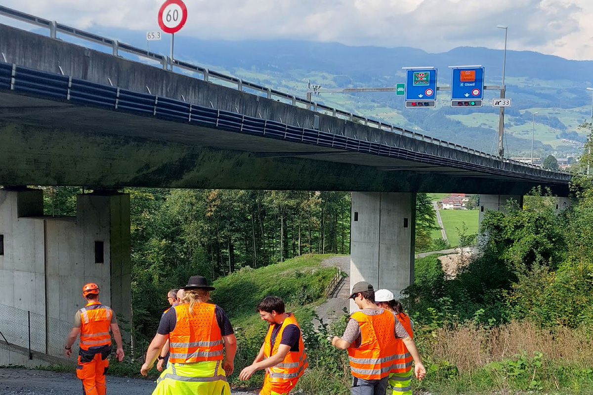
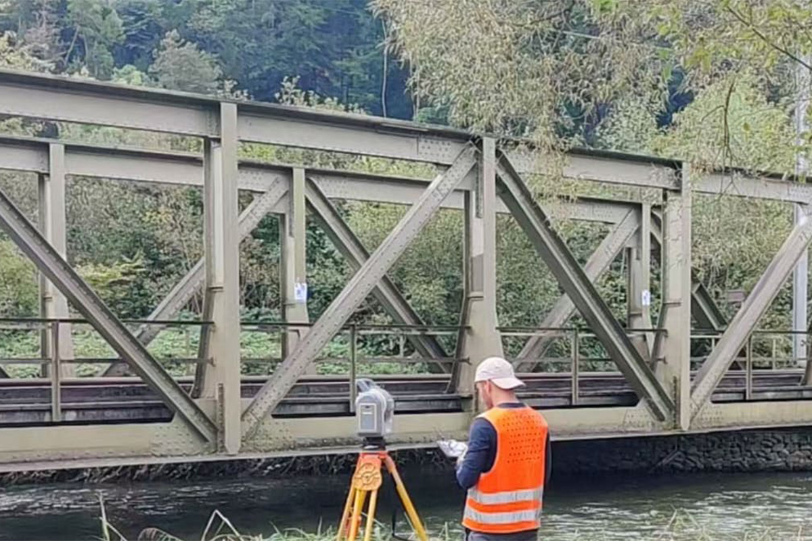
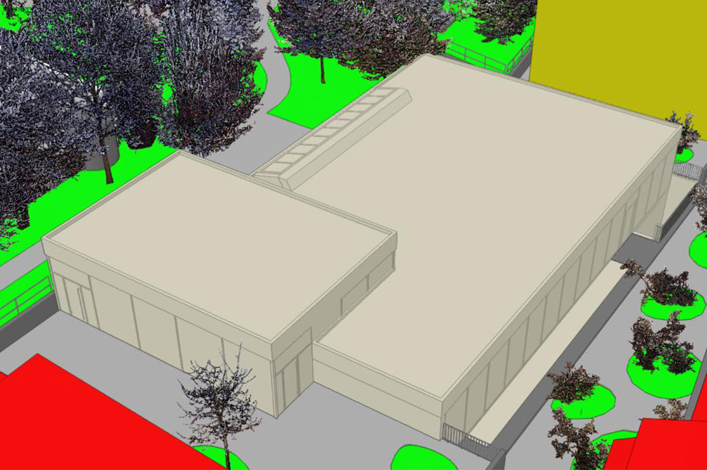

Projekte aus dem Studium
Diese Seite zeigt kurze Einblicke in meine Projekte rund um Geodaten, Erfassung, Visualisierung und Analyse. Die Projekte entstanden im Rahmen meines Geomatik-Studiums an der FHNW.
Geomatik-Student an der FHNW
Ich arbeite an BIM, Geodatenanalyse und Visualisierungen.
Diese Seite zeigt kurze Einblicke in meine Projekte rund um Geodaten, Erfassung, Visualisierung und Analyse. Die Projekte entstanden im Rahmen meines Geomatik-Studiums an der FHNW.

As-Is-3D-BIM-Modell als Planungsgrundlage für das Ausbauprojekt A8 im Kanton Obwalden.

Präzises As-Is-3D-BIM-Modell der Stahlbrücke Sarneraa als Basis für Gewichtsabschätzung, Visualisierung und Kreislaufwirtschaft.

Hochgenaues BIM-Modell der MAB-Bibliothek und Geländemodell für den Campus 2040 als Basis für Planung, Prüfung und Visualisierung.

Bachelorarbeit zur Bewertung von iOS-basierten 3D-Scanning-Apps für die Dokumentation von Werkleitungen in offenen Baugräben.